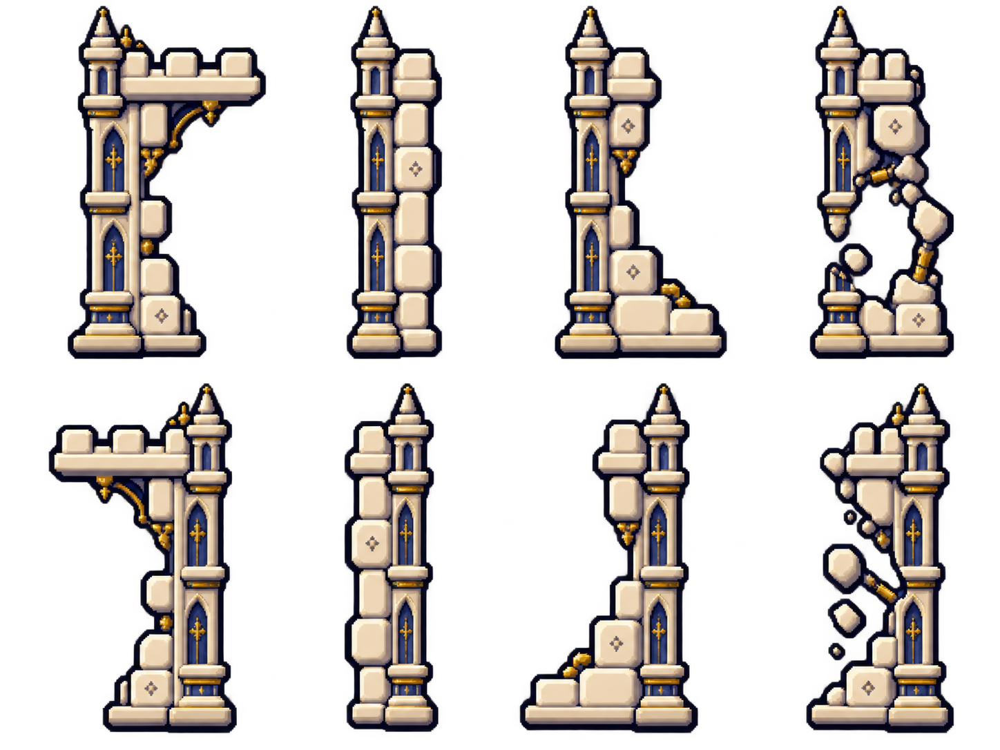
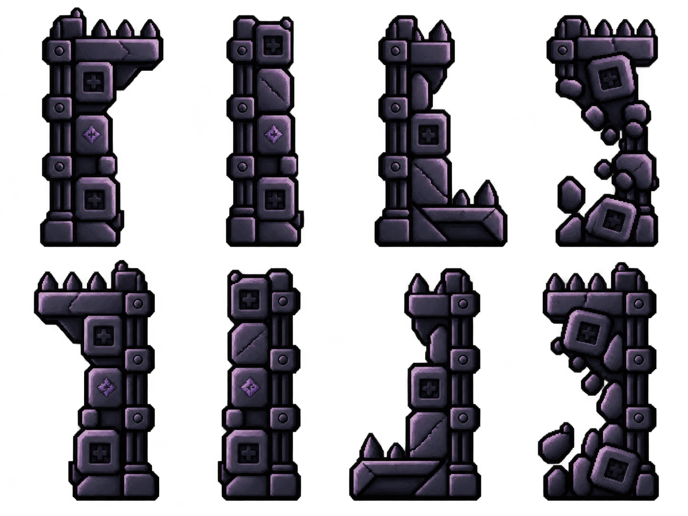
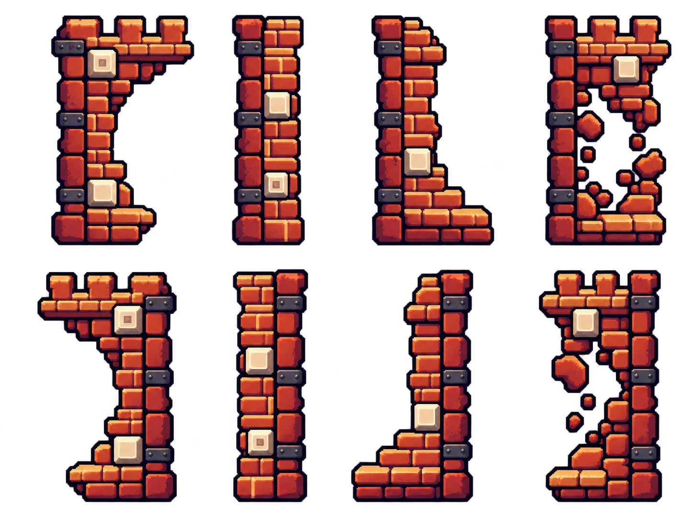
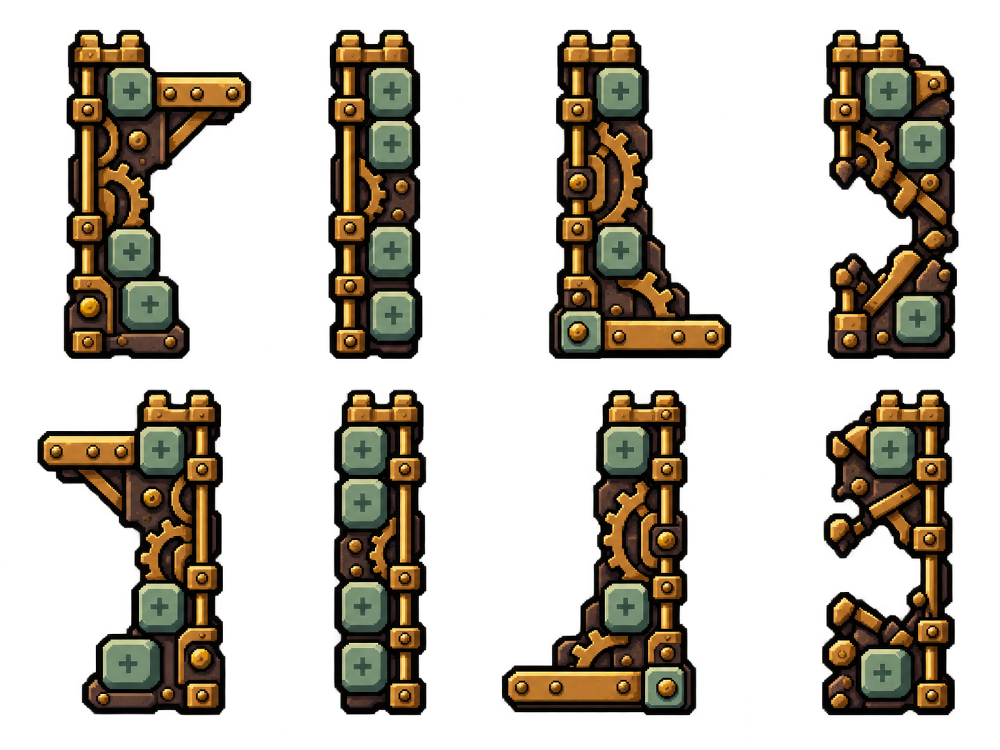
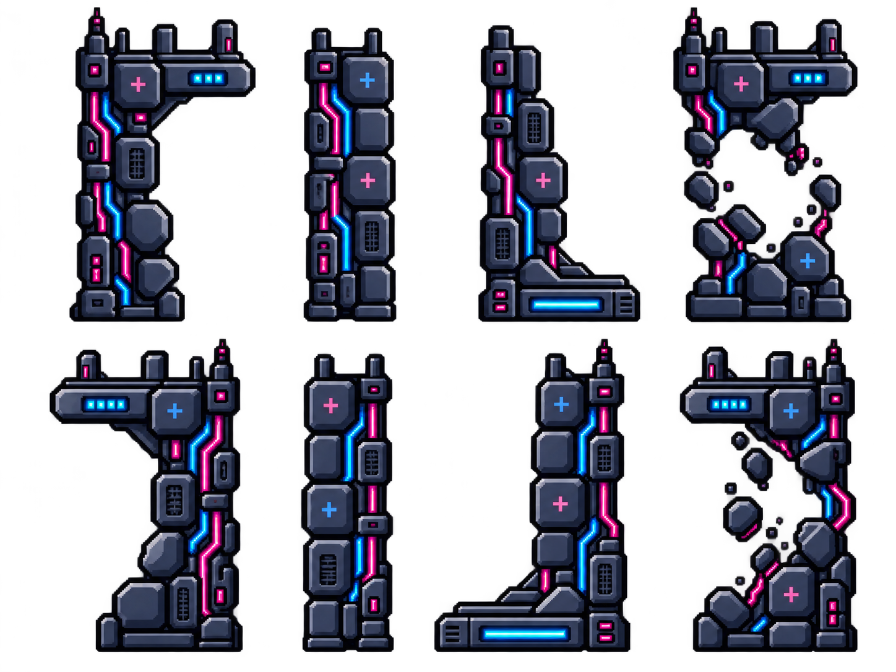
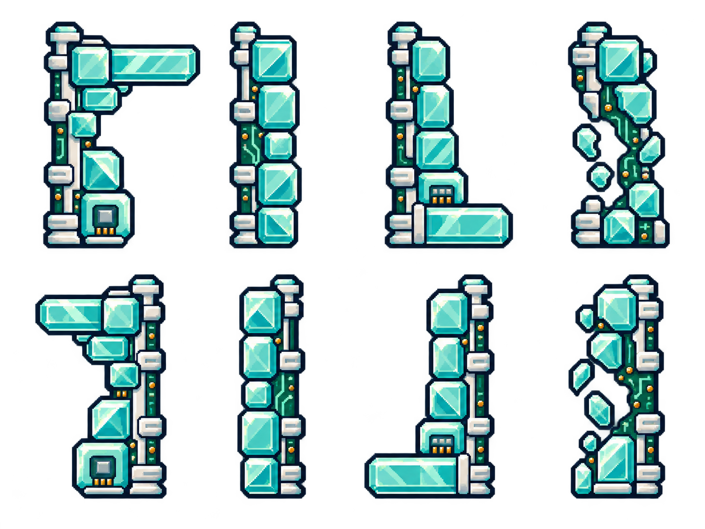

좌우 상단 / 중간 / 하단 / 파손. 이미지를 누르면 원본이 열립니다. 배경색은 비교 화면에만 적용됩니다.

01-porcelain-gothic.png · 1448 × 1086 · 투명 PNG

02-obsidian-fortress.png · 1448 × 1086 · 투명 PNG

03-terracotta-bastion.png · 1448 × 1086 · 투명 PNG

04-bronze-clockwork.png · 1448 × 1086 · 투명 PNG

05-neon-data-castle.png · 1448 × 1086 · 투명 PNG

06-aqua-glass-circuit.png · 1448 × 1086 · 투명 PNG